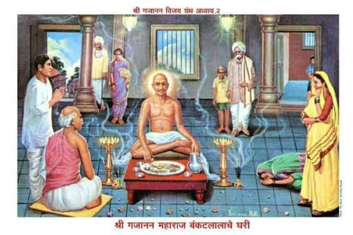

॥ अध्याय २ ॥

॥श्रीगणेशाय नमः॥
जयजय अज अजिता सर्वेश्वरा ।
हेचंद्रभागातटविहारा ।
पूर्णब्रह्मा रुक्मिणीवरा ।
दीनबंधो पाहि माम् ॥१॥
तुझ्या वशिल्यावांचून ।
अवघेंच देवा आहे शीण ।
कुडीमाजीं नसल्या प्राण ।
कोण विचारी मढयातें ॥२॥
सरोवराची दिव्य शोभा ।
तोयामुळें पद्मनाभा ।
रसभरीत आंतला गाभा ।
टरफलातें महत्त्व आणी ॥३॥
तुझी कृपा त्याच परी ।
शरणांगतातें समर्थ करी ।
पाप ताप दैन्य वारी ।
हेंच आहे मागणें ॥४॥
मागले अध्यायीं झालें कथन ।
समर्थ गेले निघून ।
तेणें बंकटलाला लागून ।
हुरहूर वाटूं लागली ॥५॥
गोड न लागे अन्नपाणी ।
समर्थांचा ध्यास मनीं ।
न हाले दृष्टीपासोनी ।
गजाननाचें रुप तें ॥६॥
जिकडे पहावें तिकडे भास ।
होवो लागला त्यांचा खास ।
याचें नांव श्रोते ध्यास ।
उग्या नसती पोरचेष्टा ॥७॥
चुकलेल्या धेनूची ।
वत्स शुद्धि करी साची ।
तैसी बंकटलालाची ।
स्थिति झाली विबुध हो ! ॥८॥
हें हितगुज सांगावया ।
जागा नव्हती कोठें तया ।
वडिलांपासीं बोलावया ।
छाती त्याची होईना ॥९॥
ऐशा रीति चित्तीं भलें ।
विचाराचें काहूर झालें ।
शेगांव अवघें धुंडाळिलें ।
परी न पत्ता लागला ॥१०॥
घरीं येतां वडील पुसती ।
भवानी राम सन्मती ।
बाळा तुझी आज वृत्ती ।
का रे झाली चंचळ ॥११॥
चित्तीं उत्साह दिसेना ।
वदनीं दिसे म्लानपणा ।
ऐशा असह्य यातना ।
होती कशाच्या सांग मज ? ॥१२॥
तूं पोर्या तरणा ज्वान ।
नाहीं कशाची तुला वाण ।
ऐसें साच असोन ।
चिंतातुर दिसतोसी ॥१३॥
किंवा शरीरीं कांहीं व्याधी ।
होतसे ती सांग आधीं ।
चोरुन पुत्र ठेवी न कधीं ।
गोष्ट कोणती पित्याला ॥१४॥
कांहीं तरी सांगून ।
केलें पित्याचें समाधान ।
पुन्हा शोधाकारण ।
फिरुं लागला शेगांवीं ॥१५॥
बंकटलालाचे शेजारीं ।
एक होते सदाचारी ।
घरीं होती जमेदारी ।
परी अभिमान नसे त्याचा ॥१६॥
ते देशमुख रामाजीपंत ।
वयानें वृद्ध अत्यंत ।
बंकटलालानें इत्यंभूत ।
हकीकत त्यांना निवेदिली ॥१७॥
ते बोलले बंकटलाला ।
तुझा वृत्तान्त मी ऐकिला ।
तूं जो पुरुष कथिसी मला ।
तो योगी असावा कोणीतरी ॥१८॥
योग्यावांचुनी ऐशा क्रिया ।
मिळती न कोठें पाहावया ।
पूर्वसुकृता वांचोनिया ।
होणें न दर्शन अशाचें ॥१९॥
तूं घेतलें दर्शन ।
जन्म तुझा धन्य धन्य ।
भेटतां ते तुजलागून ।
ने मलाही दर्शना ॥२०॥
ऐशा स्थितींत दिवस चार ।
गेले निघून साचार ।
बंकटलालासी तीळभर ।
विसर न पडे तयाचा ॥२१॥
गोविंदबुवा टाकळीकर ।
होते एक कीर्तनकार ।
ज्यांच्या कीर्तनीं शारंगधर ।
प्रसन्नचित्त होतसे ॥२२॥
लौकिक यांचा वर्हाडांत ।
होता मोठया प्रमाणांत ।
ते आले फिरत फिरत ।
कीर्तन कराया शेगांवीं ॥२३॥
शंकराच्या मंदिरीं ।
झाली कीर्तनाची तयारी ।
धांवो लागल्या नरनारी ।
कीर्तन ऐकायाकारणें ॥२४॥
बंकटलालही तेथें आला ।
कीर्तन श्रवणासाठीं भला ।
मध्यें शिंपी भेटला ।
पितांबर नाम ज्याचें ॥२५॥
हा शिंपी पितांबर ।
भोळां भाविक होता फार ।
त्यासी समर्थाचा समाचार ।
बंकटलालें कथन केला ॥२६॥
दोघे कीर्तना चालले ।
तों अवचित समर्थ पाहिले ।
मागल्या बाजूस बसलेले ।
फरसावरी तेधवां ॥२७॥
मग कशाचें कीर्तन ।
गेले उभयतां धांवून ।
जेवीं द्रव्य-घटातें पाहून ।
कृपण जाय हपापोनी ॥२८॥
वा चातकातें स्वातिघन ।
वा मोरासी मेघदर्शन ।
किंवा तो रोहिणीरमण ।
चकोर पाहातां आनंदें ॥२९॥
तैसें उभयतांसी झालें ।
दूर उभे राहिले ।
विनयानें बोलूं लागले ।
कांहीं आणूं का खावया ? ॥३०॥
महाराज बोलले त्यावरी ।
तुला गरज असेल जरी ।
आण झुणकाभाकरी ।
माळणीच्या सदनांतून ॥३१॥
बंकटलालें सत्वरीं ।
चून अर्धी भाकरी ।
आणोन ठेविली हातावरी ।
तया योगेश्वराच्या ॥३२॥
चून भाकरी खात खात ।
वदले पितांबरासी समर्थ ।
जा जावोनी ओढयाप्रत ।
तुंबा भरोनी आण पाणी ॥३३॥
पितांबर बोले गुरुराया ।
ओढयास पाणी अल्प सदया ।
पाण्यांत तुंबा बुडावया ।
मुळीं नाहीं अवसर ॥३४॥
इतुकें असून तें पाणी ।
खराब केलें गुरुंनीं ।
तेवीं जाणार्या येणार्यांनीं ।
नाहीं पिण्याच्या योग्य तें ॥३५॥
मर्जी असल्या दुसरीकडून ।
पाणी आणितों तुंबा भरुन ।
तैं बोलले गजानन ।
दुसरें पाणी आम्हां नको ॥३६॥
नाल्याचेंच आण पाणी ।
आंत तुंबा बुडवोनी ।
उगीच ओंजळी-ओंजळींनीं ।
तुंब्यांत पाणी भरुं नको ॥३७॥
तुंबा घेऊन पितांबर ।
तात्काळ गेला नाल्यावर ।
तुंबा भरेल ऐसें नीर ।
कोठें न त्यानें पाहिलें ॥३८॥
तळवे पदाचे भिजतील ।
इतुकेंच तेथें होतें जल ।
करुन हातांची ओंजळ ।
तुंब्यांत पाणी भरणें नसे ॥३९॥
ऐसी झाली आड विहीर ।
चिंतावला पितांबर ।
हिय्या करुन अखेर ।
तुंवें स्पर्श केला जला ॥४०॥
तों ऐसें झालें अघटीत ।
तुंबा ठेवावा जेथ जेथ ।
तो बुडे तेथ तेथ ।
खळगा पाहून ओढयाला ॥४१॥
नाल्याचें घाण जीवन ।
तुंब्यांत स्फटिकासमान ।
आल तैसें पाहोन ।
शिंपी चित्तीं चकित झाला ॥४२॥
तो म्हणे ही ऐशी स्थिति ।
कीं आज झाली निश्चिती ।
ती योगेश्वराची साच शक्ति ।
संशय येथें धरणें नको ॥४३॥
तुंबा आणून ठेविला ।
योगेश्वराचे सान्निध्याला ।
त्याचा समर्थें स्वीकार केला ।
झुणकाभाकर सेविल्यावर ॥४४॥
बंकटलालासी सुपारी ।
मागते झाले साक्षात्कारी ।
अरे माळिणीच्या भाकरीवरी ।
माझी सेवा करतोस कां ? ॥४५॥
काढ सुपारी खिशांतून ।
फोडोन देई मजकारण ।
तें ऐकतां समाधान ।
बंकटलालास झालें बहु ॥४६॥
सुपारीच्या बरोबरी ।
दोन पैसे हातावरी ।
ठेवितां झाला व्याघ्रांबरी ।
दुदंडी तांब्याचे ॥४७॥
खडकु दुदंडी व्याघ्रांबरी ।
हीं मुसलमानी नाणीं सारीं ।
चालत होतीं व्यवहारीं ।
तया वर्हाड प्रांतांत ॥४८॥
पैशाप्रती पाहून ।
महाराज बोलले हांसोन ।
काय व्यापारी समजून ।
मजला तूं हें अर्पिसी ? ॥४९॥
हें नाणें तुमचें व्यवहारीं ।
मला न त्याची जरुरी ।
भावभक्ति नाण्यावरी ।
संतुष्ट मी रहातसे ॥५०॥
तें तुझ्याजवळ होतें ।
म्हणून भेटलों पुन्हां तूंतें ।
याचा विचार चित्तातें ।
करी म्हणजे कळेल ॥५१॥
जा आतां कीर्तन ।
दोघे जाऊन करा श्रवण ।
मी लिंबापाशीं बैसोन ।
कथा त्याची ऐकतों ॥५२॥
दोघे कीर्तनाप्रती आले ।
महाराज लिंबापाशीं बैसले ।
गोविंदबुवांचें सुरु झालें ।
आरंभींचें निरुपण ॥५३॥
निरुपणासी भागवतीचा ।
घेतला होता एक साचा ।
श्लोक एकादश स्कंधाचा ।
हंसगीतामधील ॥५४॥
बुवांनीं पूर्वार्धा विशद केलें ।
त्याचा उत्तरार्ध समर्थ वदले ।
तें ऐकोन घोटाळले ।
गोविंदबुवा मनांत ॥५५॥
हा उत्तरार्ध वदणारा ।
पुरुष अधिकारी दिसतो खरा ।
जा त्या घेऊन मंदिरा ।
या हो कीर्तनश्रवणास ॥५६॥
बंकटलाल पितांबर ।
आणिक मंडळी निघाली इतर ।
समर्थासी साचार ।
कीर्तनासी आणावया ॥५७॥
केली विनंती अवघ्यांनीं ।
श्रोते अती विनयांनीं ।
परी बसल्या जागेपासोनी ।
मुळीं न महाराज हलले हो ॥५८॥
गोविंदबुवा अखेर ।
येवोन जोडीते झाले कर ।
कृपा करावी एक वार ।
चला शिवाच्या मंदिरीं ॥५९॥
तुम्ही साक्षात् शंकर ।
बरें न बसणें बाहेर ।
धन्यावांचून मंदिर ।
शून्य साच समर्था ॥६०॥
पूर्वजन्मींचें पुण्य भलें ।
माझें आज उदेलें ।
म्हणून हे दृष्टी पडले ।
साक्षात् चरण शिवाचे ॥६१॥
कीर्तनाची फलप्राप्ती ।
झाली आज मजप्रती ।
वेळ न करा गुरुमूर्ती ।
चला मंदिरीं माझ्यासवें ॥६२॥
ऐसें गोविंदबुवा बोलतां ।
समर्थ वदलें तत्त्वतां ।
ठेवी एकवाक्यता ।
भाषणीं गोविंदा लवमात्र ॥६३॥
तूं इतक्यांत प्रतिपादिलें ।
अवघें ईश्वरें व्यापिलें ।
आंत बाहेर कांहीं न उरलें ।
मग हा ऐसा हट्ट कां ? ॥६४॥
जें जें जयानें सांगावें ।
तें तें त्यानें आचरावें ।
शब्दच्छलासी न करावें ।
साधकानें केव्हांही ॥६५॥
भागवताचा श्लोक सांगसी ।
आणि त्याच्या विरुद्ध वागसी ।
कथेकर्याची रीत ऐसी ।
बरवी नव्हे गोविंदा ॥६६॥
पोटभर्या कथकेरी ।
तूं न व्हावें भूमीवरी ।
जा कीर्तन समाप्त करी ।
मी येथून ऐकतों ॥६७॥
बुवा कीर्तनीं परत आले ।
गर्जोन अवघ्यां बोलले ।
तुमच्या शेगांवीं अमोल आलें ।
रत्न हें त्या सांभाळा ॥६८॥
हें न शेगांव राहिलें ।
पंढरपूर खचीत झालें ।
चालते बोलते येथ आले ।
साक्षात् हे पांडुरंग ॥६९॥
यांची तरतूद ठेवावी ।
सेवा यांची करावी ।
यांची आज्ञा मानावी ।
वेदवाक्यापरी हो ॥७०॥
तरीच तुमचें कल्याण ।
होईल निःसंशय करुन ।
अनायासें हें निधान ।
जोडलें त्या दवडूं नका ॥७१॥
कीर्तन अवघें सांग झालें ।
लोक आपुल्या घरां गेले ।
बंकटलाल घरीं आले ।
चित्तीं हर्ष मावेना ॥७२॥
आपल्या सन्माननीय पित्यासी ।
हकीकत कथिली प्रेमेंसी ।
बाबा आपुल्या घरासी ।
गजानन आणा हो ! ॥७३॥
पुत्रानें जें कथन केलें ।
तें भवानीरामें ऐकिलें ।
आणि प्रेमें ऐसें वदलें ।
तूंच ये त्या घेऊन ॥७४॥
पित्याची मिळाली संमती ।
बंकटलाल हर्षें अती ।
म्हणे कधीं भेटेल गुरुमूर्ती ।
मजला सदनीं आणावया ॥७५॥
पुढें माणिक चौकांत ।
चौथे दिवशीं सद्गुरुनाथ ।
भेटले बंकटलाला प्रत ।
अस्तमानाचे समयाला ॥७६॥
दिनपति अस्ता गेला ।
इकडे बोधसूर्य उदेला ।
माणिक चौक प्राचीला ।
बंकटलालाच्या भाग्यानें ॥७७॥
गुराखी घेऊन धेनूस ।
येऊं लागले ग्रामास ।
समर्थांच्या आसपास ।
गाई जमूं लागल्या ॥७८॥
त्या वाटले नंदसुत ।
आला येथें साक्षात ।
वृक्षावरी करितात ।
पक्षी किलकिलाट आनंदें ॥७९॥
दिवाबत्तीची तयारी ।
दुकानदार करिती खरी ।
अशा वेळीं आला घरीं ।
घेऊन बंकट महाराजा ॥८०॥
पित्यानें मूर्ति पाहातां क्षणीं ।
अती आनंद झाला मनीं ।
नमन साष्टांग केलें चरणीं ।
पाटावरी बैसविलें ॥८१॥
आणि विनविलें जोडोन होत ।
कांहीं भोजन करा येथ ।
तुम्ही साक्षात् पार्वतीकांत ।
प्रदोष वेळीं आला या ॥८२॥
शिव आराधन प्रदोषकालीं ।
घडेल तो भाग्यशाली ।
ऐसी आहे ऐकिली ।
स्कंदपुराणीं गोष्ट म्यां ॥८३॥
ऐसें म्हणोन आणिलें ।
बिल्वपत्र तात्काळ भलें ।
समर्थांच्या ठेविलें ।
परमभक्तीनें मस्तकीं ॥८४॥
करा येथें भोजन ।
ऐसें गेलों बोलून ।
परी स्वयंपाकाकारण ।
अवधी आहे कांहींसा ॥८५॥
स्वयंपाक होईपर्यंत ।
हे न थांबले जरी येथ ।
तरी प्रदोषकालीं पार्वतीकांत ।
गेला उपासी घरांतूनी ॥८६॥
त्यास करुं कैसी तोड ।
ऐसें संकट पडलें जड ।
जनसमुदाय प्रचंड ।
जमला मौज पाहावया ॥८७॥
विचार केला अखेरीं ।
दुपारच्या पुर्या आहेत घरीं ।
त्याच ठेवोन तबकांतरीं ।
पुढें ठेवूं समर्थांच्या ॥८८॥
ते अवघेच जाणती ।
कपट नाहीं माझ्या चित्तीं ।
भावें भेटतो उमापती ।
ऐसा आहे सिद्धान्त ॥८९॥
मी शिळें अवर्जुन ।
यास घालीत नाहीं अन्न ।
शिवाय पक्क्या रसोईकारण ।
शिळें म्हणणें उचित नसे ॥९०॥
चिंतिल्याप्रमाणें तयारी ।
तात्काळ त्यानें केली खरी ।
आणून ठेविलें समोरी ।
तबक एक समर्थांच्या ॥९१॥
पुर्या बदाम खारका ।
केळीं मोसंबीं मुळे देखा ।
भालाप्रती लाविला बुका ।
कंठीं घातिला पुष्पहार ॥९२॥
गुरुमूर्ति प्रसन्न चित्तें ।
अवघे झाले सेविते ।
जें जें पडेल पात्रातें ।
तें तें खाती भराभर ॥९३॥
उदरीं सुमारें तीन शेर ।
अन्न सांठविलें साचार ।
तेथेंच राहिले रात्रभर ।
श्रीगजानन महाराज ॥९४॥
बंकटलालें दुसरे दिवशीं ।
मंगल स्नान समर्थांसी ।
घातलें असे अतिहर्षी ।
तो न थाट वर्णवे ॥९५॥
घागरीं सुमारें शंभर ।
उष्णोदकाच्या साचार ।
पाणी घालती नारीनर ।
मन मानेल ऐशा रीतीं ॥९६॥
कुणी शिकेकाई लाविती ।
कुणी साबण घेऊन हातीं ।
समर्थांतें घासीती ।
पदकमळ आवडीनें ॥९७॥
कोणी दवना कोणी हीना ।
कोणी चमेली तेल जाणा ।
कोणी बेलियाच्या मर्दना ।
करुं लागले निजहस्तें ॥९८॥
अंगराग नानापरी ।
त्यांचें वर्णन कोण करी ।
बंकटलालाचिया घरीं ।
उणें नव्हतें कशाचे तें ॥९९॥
स्नानविधि संपला ।
पितांबर तो नेसविला ।
अति सन्मानें बैसविला ।
योगिराज गादीवरी ॥१००॥
भालीं गंध केशरी ।
गळ्यांत हार नानापरी ।
कोणी तुळशीमंजरी ।
वाहूं लागले शिरावर ॥१॥
नैवेद्य नानापरीचे ।
झाले समर्थार्पण साचे ।
भाग्य त्या बंकटलालाचें ।
खचित आलें उदयाला ॥२॥
तें बंकटलालाचें घर ।
झालें द्वारका साचार ।
तया दिनीं सोमवार ।
वार शिवाचा होता हो ॥३॥
अवघ्या मंडळींनीं आपुले ।
मनोरथ ते पूर्ण केले ।
एक मात्र त्यांतून उरले ।
इच्छाराम शेटजी ॥४॥
हा चुलत बंधु बंकटाचा ।
होता भाविक मनाचा ।
भक्त असे शंकराचा ।
त्यासी ऐसें वाटलें ॥५॥
आज आहे सोमवार ।
मसी उपास साचार ।
घरां प्रत्यक्ष शंकर ।
चालते बोलते आलेच कीं ॥६॥
त्यांची पूजा अस्तमानीं ।
यथासांग करोनी ।
करुं पारणा ऐसी मनीं ।
इच्छा त्यानें धरली असे ॥७॥
तों झाला अस्तमान ।
मावळलासे नारायण ।
इच्छारामें केलें स्नान ।
प्रदोष वेळा लक्षुनी ॥८॥
पूजासाहित्य घेऊन ।
साधु जे कां गजानन ।
त्यांचें केलें पूजन ।
परम प्रेमें करोनी ॥९॥
आणि विनंती केली वरी ।
झालें आहे दुपारीं ।
आपुलें तें भोजन जरी ।
परी आतां कांहीं खावें ॥११०॥
आपण जेवल्यावांचून ।
मी नाहीं घेणार अन्न ।
आहे मजला उपोषण ।
सोमवारचें गुरुराया ! ॥११॥
अवघ्या भक्तांचा हेत पुरला ।
माझा मात्र राहिला ।
तो पाहिजे पुरविला ।
तुम्ही कृपा करुन ॥१२॥
जन कुतूहल दृष्टींनीं ।
पाहूं लागले तया स्थानीं ।
इच्छाराम तो घेवोनी ।
नैवेद्य आला परातींत ॥१३॥
आंबेमोहर तांदळाचा ।
दोन मुदी भात साचा ।
नानाविध पक्वान्नांचा ।
थाट केला तयानें ॥१४॥
जिलबी राघवदास मोतीचूर ।
करंज्या अनारसे घीवर ।
शाखांचे नाना प्रकार ।
वर्णन करावे कोठवरी ? ॥१५॥
अगणित चटण्या कोशिंबिरी ।
वाडगा दह्याचा शेजारीं ।
तुपाची ती वाटी खरी ।
आदनाच्या सव्य भागा ॥१६॥
चार मनुष्यांचें अन्न ।
ऐसा नैवेद्य परिपूर्ण ।
समर्थांपुढें आणून ।
ठेवला इच्छारामानें ॥१७॥
पाहोन त्या नैवेद्यासी ।
महाराज बोलले आपणासी ।
खातो खातो अहर्निशीं ।
ऐसें बोलसी गणप्पा ॥१८॥
खा हें आतां अवघें अन्न ।
अघोर्या न करी अनमान ।
पाहों आले अवघे जन ।
तुझ्या अघोर वृत्तीला ॥१९॥
महाराज भोजना बैसले ।
अन्न अवघें पार केलें ।
पात्रीं न कांहीं ठेविलें ।
मीठ लिंबू तेंही पाहा ॥१२०॥
आग्रहाचा प्रकार ।
काय होतो अखेर ।
हें दावण्या साचार ।
कौतुक केलें गुरुवरें ॥२१॥
खणाणून उलटी झालि ।
खाल्ल्या अन्नाची ती भली ।
ऐसीच गोष्ट होती केली ।
श्रीरामदासें एकदां ॥२२॥
खिरीची झाली वासना ।
रामदासाचीया मना ।
तिची खोड मोडण्या जाणा ।
आकंठ खीर प्याले कीं ॥२३॥
उलटीं होतां परत ।
ती भक्षूं लागले सद्गुरुनाथ ।
श्रीरामदासस्वामी समर्थ ।
वासनेसी जिंकावया ॥२४॥
तैसें लोकाग्रहाला ।
घालावयासी शीघ्र आळा ।
हा उलटीचा प्रकार केला ।
अंगीं बळ असूनिया ॥२५॥
सत्पुरुषाचें आचरण ।
पुढील पिढीला साधन ।
होतें कराया संरक्षण ।
निसर्गाच्या धर्माचें ॥२६॥
तेंच समर्थें येथें केलें ।
लोकांलागीं सुचविलें ।
आग्रह करणें न चांगलें ।
तो विपरीत फळ देई ॥२७॥
असो उलटी झाल्यावरी ।
जागा केली साफ सारी ।
नेवोन बैसविले पहिल्या परी ।
स्नान घालोन महाराजा ॥२८॥
नरनारी दर्शनें घेती ।
महाराजांची आनंदवृत्ती ।
तों भजन करण्याप्रती ।
दिंडया आल्या दोन तेथें ॥२९॥
आवाज ज्यांचे सुस्वर ।
खडे पहाडी मनोहर ।
विठ्ठलाचा नामगजर ।
करुं लागले आवडीनें ॥१३०॥
इकडे महाराज आसनीं ।
होते ते वदले वदनीं ।
भजनाचिया मिषांनीं ।
"गणगण गणांत बोते" ॥३१॥
हेंच सर्वदा त्यांचें भजन ।
करिती टिचक्या वाजवून ।
ऐसा झाला आनंद जाण ।
रात्रभरीं ते ठायां ॥३२॥
’गण गण’ हें त्यांचें भजन ।
हमेशा चाले म्हणून ।
लोकांनीं दिलें अभिधान ।
गजानन हें तयाला ॥३३॥
जो स्वयमेव ब्रह्म झाला ।
नांवरुप कोठून त्याला ? ।
नामरुपाचा गलबला ।
प्रकृतीच्या आश्रयास ॥३४॥
अस्ति-भाति-प्रिया ठायीं ।
योगेश्वर निमग्न राही ।
त्या आनंदा न वर्णवे कांहीं ।
त्याची उपमा त्यालाच असे ॥३५॥
आषाढीसी पंढरपूर ।
वा सिंहस्थीं गोदातीर ।
वा कुंभमेळ्यासी साचार ।
गर्दी होते हरिद्वारीं ॥३६॥
त्यापरि शेगांवांत ।
बंकटलालाच्या घरांत।
लांबलांबून असंख्यात ।
जन येती दर्शना ॥३७॥
स्वामी समर्थ गजानन ।
हेच विठ्ठल नारायण ।
निश्चय विटेस ठेवून ।
पाय उभे राहिले ॥३८॥
त्यांचें वचन गोदातीर ।
आनंद हा हरिद्वार ।
गजबजलें शेगांव नगर ।
सदन राऊळ बंकटाचें ॥३९॥
जो ब्रह्मपदा पोंचला ।
जात कोठून उरली त्याला ? ।
सूर्याचिया प्रकाशाला ।
अवघेंच आहे सारखें ॥१४०॥
नित्य यात्रा नवी येई ।
समाराधना होती पाही ।
त्यांतें वाणितां शेषही ।
थकून जाईल निःसंशय ॥४१॥
तेथें माझा पाड कोण ।
मी कीटकासमान ।
अवघें वदे गजानन ।
निमित्त करुन माझ्या मुखा ॥४२॥
समर्थांची दिनचर्या ।
सांगतों थोडी या ठायां ।
अगाध त्यांचें चरित्र गाया ।
मज पामरा मती नसे ॥४३॥
कधीं करावें मंगलस्नान ।
कधीं हाळांत जाऊन ।
कधीं कधीं प्राशन ।
करावें गढूळ जलाचें ॥४४॥
त्यांच्या दिनचर्येचा ।
नियम नव्हता एक साचा ।
प्रकार वायूच्या गतीचा ।
न ये ठरवितां कोणासी ॥४५॥
चिलमीवरी प्रेम भारी ।
ती लागे वरच्यावरी ।
नव्हती आसक्ति तिच्यावरी ।
तें केवळ कौतुक ॥४६॥
असो आतां पुढीलाध्याया ।
भाव ठेवा ऐकावया ।
आली पर्वणी साधावया ।
वेळ करुं नका हो ! ॥४७॥
हें श्रीगजाननचरित्र ।
आदर्श होवो भाविकांप्रत ।
हेंच विनवी जोडोन हात ।
दासगणू ईशातें ॥१४८॥
शुभं भवतु ॥ श्रीहरिहरार्पणमस्तु ॥
॥इति द्वितीयोऽध्यायः समाप्तः ॥